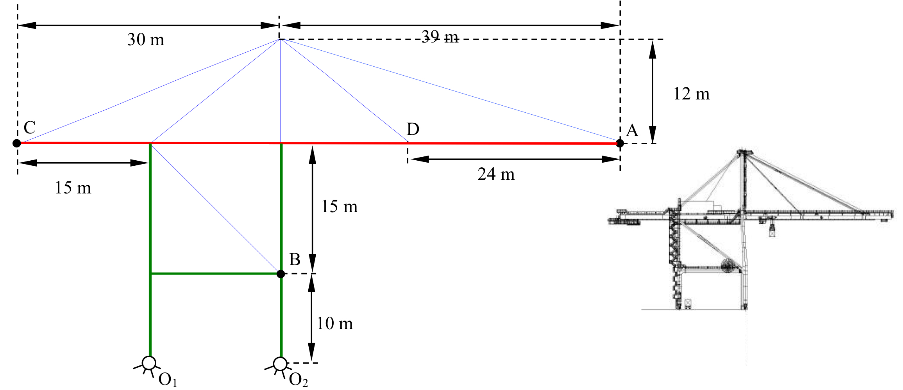
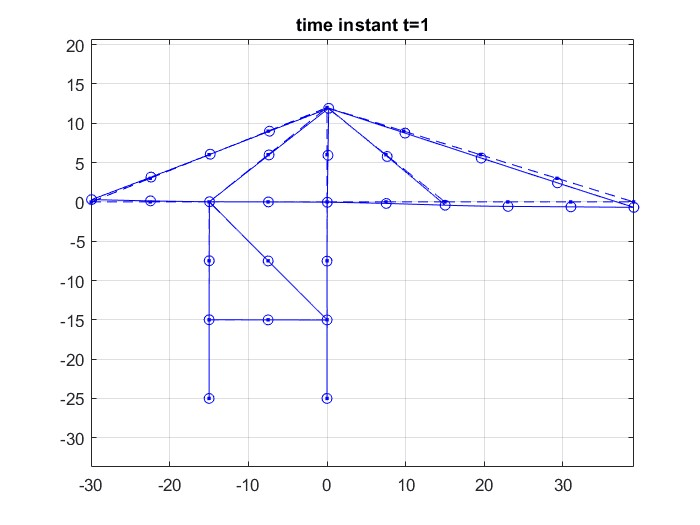
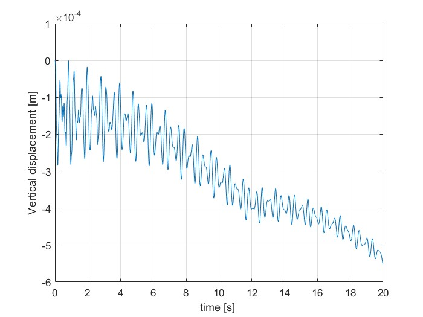

This project involved developing a comprehensive Finite Element Analysis (FEA) of a massive steel harbour crane to assess its structural integrity and dynamic responses under various loading and operating conditions.
I successfully built the FE model in MATLAB from the ground up, partitioning the global mass and stiffness matrices to solve the eigenvalue problem for the free degrees of freedom. This revealed the primary bending and torsional modes of the crane.
I further proved that a modal superposition approach utilizing only the first three modes could accurately approximate the full system's Frequency Response Functions (FRFs). Finally, I simulated the structural response to both its own static weight and a 1000N dynamic load moving across the boom, verifying the stability and safety limits of the crane design.

